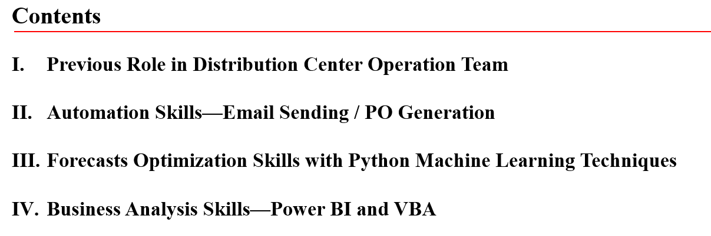
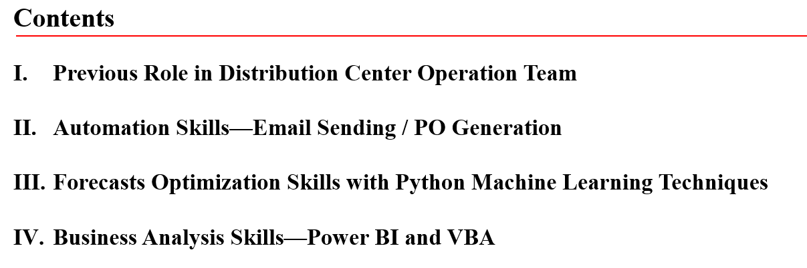

I. Previous Role in Distribution Center Operation Team


II. Automation Skills—Email Sending / PO Generation
a) Analysis Report’s E-mail Auto-Sending (VBA)


b) SAP Purchase Order Auto-Creation (Python)


III. Forecasts Optimization Skills with Python Machine Learning Techniques


IV. Business Analysis Skills—Power BI and VBA
a) Business Review Deck Auto-Generation (VBA)


b) Business Analysis Dashboard Generation (Power BI)